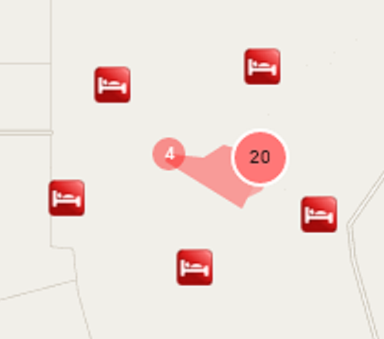

Clustering für heterogene Point-Clouds
Bachelorarbeit von Malte Wellmann, 2014.
Erstgutachter: Dr. Falko Schmid
Zweitgutachter: Prof. Dr. Rainer Koschke
1. Schritt: Anzeige einstellen

Klick auf Cluster
Zoom auf Cluster
Lupen-Effekt
Maus über Cluster
Eigene Implementierung
Google MarkerClusterer
ohne Clustering
Dynamisches Hinzufügen von Punkten (Klick auf Karte)
aus
an
Zoomverhalten
normal
verlangsamt
2. Schritt: Stadt laden
Alternativ: Evaluation starten
Beim Starten der Evaluation werden die hier gesetzten Parameter nicht berücksichtigt.